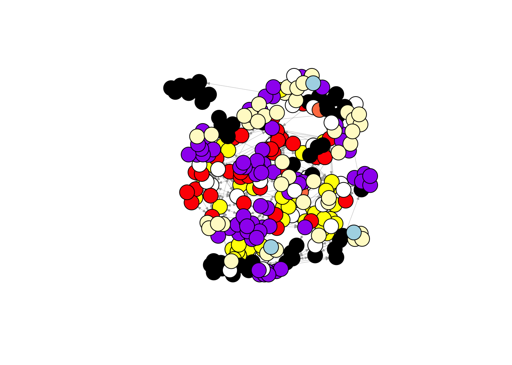

Week 1
Bram Koeweiden
Last compiled on November, 2025
rm(list = ls())
fpackage.check <- function(packages) {
lapply(packages, FUN = function(x) {
if (!require(x, character.only = TRUE)) {
install.packages(x, dependencies = TRUE)
library(x, character.only = TRUE)
}
})
}
fsave <- function(x, file = NULL, location = "./data/processed/") {
ifelse(!dir.exists("data"), dir.create("data"), FALSE)
ifelse(!dir.exists("data/processed"), dir.create("data/processed"), FALSE)
if (is.null(file))
file = deparse(substitute(x))
datename <- substr(gsub("[:-]", "", Sys.time()), 1, 8)
totalname <- paste(location, datename, file, ".rda", sep = "")
save(x, file = totalname) #need to fix if file is reloaded as input name, not as x.
}
fload <- function(filename) {
load(filename)
get(ls()[ls() != "filename"])
}
fshowdf <- function(x, ...) {
knitr::kable(x, digits = 2, "html", ...) %>%
kableExtra::kable_styling(bootstrap_options = c("striped", "hover")) %>%
kableExtra::scroll_box(width = "100%", height = "300px")
}
colorize <- function(x, color) {
sprintf("<span style='color: %s;'>%s</span>", color, x)
}
packages = c("RSiena", "devtools", "igraph")
fpackage.check(packages)#> [[1]]
#> NULL
#>
#> [[2]]
#> NULL
#>
#> [[3]]
#> NULL# devtools::install_github('JochemTolsma/RsienaTwoStep', build_vignettes=TRUE)
packages = c("RsienaTwoStep")
fpackage.check(packages)#> [[1]]
#> NULLlibrary(tidyverse)scholars <- fload("./data/processed/scholars_20240924.rda")fcolnet <- function(data = scholars, university = c("RU", "EUR", "WUR", "UvA", "Leiden", "VU", "UU",
"UvT"), discipline = c("sociology", "political science"), waves = list(c(2015, 2018), c(2019, 2023)),
type = c("first")) {
# step 1
demographics <- do.call(rbind.data.frame, data$demographics)
demographics <- demographics %>%
mutate(Universiteit1.22 = replace(Universiteit1.22, is.na(Universiteit1.22), ""), Universiteit2.22 = replace(Universiteit2.22,
is.na(Universiteit2.22), ""), Universiteit1.24 = replace(Universiteit1.24, is.na(Universiteit1.24),
""), Universiteit2.24 = replace(Universiteit2.24, is.na(Universiteit2.24), ""), discipline.22 = replace(discipline.22,
is.na(discipline.22), ""), discipline.24 = replace(discipline.24, is.na(discipline.24), ""))
sample <- which((demographics$Universiteit1.22 %in% university | demographics$Universiteit2.22 %in%
university | demographics$Universiteit1.24 %in% university | demographics$Universiteit2.24 %in%
university) & (demographics$discipline.22 %in% discipline | demographics$discipline.24 %in% discipline))
demographics_soc <- demographics[sample, ]
scholars_sel <- lapply(scholars, "[", sample)
# step 2
ids <- demographics_soc$au_id
nwaves <- length(waves)
nets <- array(0, dim = c(nwaves, length(ids), length(ids)), dimnames = list(wave = 1:nwaves, ids,
ids))
dimnames(nets)
# step 3
df_works <- tibble(works_id = unlist(lapply(scholars_sel$work, function(l) l$id)), works_author = unlist(lapply(scholars_sel$work,
function(l) l$author), recursive = FALSE), works_year = unlist(lapply(scholars_sel$work, function(l) l$publication_year),
recursive = FALSE))
df_works <- df_works[!duplicated(df_works), ]
# step 4
if (type == "first") {
for (j in 1:nwaves) {
df_works_w <- df_works[df_works$works_year >= waves[[j]][1] & df_works$works_year <= waves[[j]][2],
]
for (i in 1:nrow(df_works_w)) {
ego <- df_works_w$works_author[i][[1]]$au_id[1]
alters <- df_works_w$works_author[i][[1]]$au_id[-1]
if (sum(ids %in% ego) > 0 & sum(ids %in% alters) > 0) {
nets[j, which(ids %in% ego), which(ids %in% alters)] <- 1
}
}
}
}
if (type == "last") {
for (j in 1:nwaves) {
df_works_w <- df_works[df_works$works_year >= waves[[j]][1] & df_works$works_year <= waves[[j]][2],
]
for (i in 1:nrow(df_works_w)) {
ego <- rev(df_works_w$works_author[i][[1]]$au_id)[1]
alters <- rev(df_works_w$works_author[i][[1]]$au_id)[-1]
if (sum(ids %in% ego) > 0 & sum(ids %in% alters) > 0) {
nets[j, which(ids %in% ego), which(ids %in% alters)] <- 1
}
}
}
}
if (type == "all") {
for (j in 1:nwaves) {
df_works_w <- df_works[df_works$works_year >= waves[[j]][1] & df_works$works_year <= waves[[j]][2],
]
for (i in 1:nrow(df_works_w)) {
egos <- df_works_w$works_author[i][[1]]$au_id
if (sum(ids %in% egos) > 0) {
nets[j, which(ids %in% egos), which(ids %in% egos)] <- 1
}
}
}
}
output <- list()
output$data <- scholars_sel
output$nets <- nets
return(output)
}test <- fcolnet(data = scholars,
university = c("RU", "EUR", "WUR", "UvA", "Leiden", "VU", "UU", "UvT"),
discipline = c("sociology", "political science"),
waves = list(c(2015, 2018), c(2019, 2023)),
type = c("all"))
test_w2 <- igraph::graph_from_adjacency_matrix(
test$nets[2,,], #now, I take the second wave
mode = c("directed"),
weighted = NULL,
diag = FALSE,
add.colnames = NULL
)
#Let us find ego characteristics.
#first fish out the data
df <- test$data
#same complicated structure as 'scholars' thus first make a dataframe from the list in which all info was saved.
df_ego <- do.call(rbind.data.frame, df$demographics)
#DO NOT MESS UP THE ORDER! THUS IF YOU JOIN THIS DATA WITH YOUR OWN DATA CHECK THAT ORDER REMAINED THE SAME!!
#Adding gender
df_gender <- fload("./data/processed/df_gender.rda")
gender <- df_gender[, c("name", "gender")]
gender <- gender %>%
rename(Naam = name)
df_ego <- left_join(df_ego, gender, by="Naam")
comp <- igraph::components(test_w2)
g_con <- induced_subgraph(test_w2, which(comp$membership == which.max(comp$csize)))
l <- layout_with_dh(g_con)
plot(g_con,
vertex.color = ifelse(df_ego$Universiteit1.24 == "RU", "red",
ifelse(df_ego$Universiteit1.24 == "WUR", "green",
ifelse(df_ego$Universiteit1.24 == "UU", "yellow",
ifelse(df_ego$Universiteit1.24 == "UvA", "black",
ifelse(df_ego$Universiteit1.24 == "Leiden", "blue",
ifelse(df_ego$Universiteit1.24 == "VU", "purple",
ifelse(df_ego$Universiteit1.24 == "UvT", "lightblue",
ifelse(df_ego$Universiteit1.24 == "EUR", "lemonchiffon",
ifelse(df_ego$Universiteit1.24 == "RUG", "coral", "white"))))))))),
vertex.label = NA,
edge.width = 0.2,
edge.arrow.size =0.2, layout = l)
l <- layout_with_dh(test_w2)
plot(test_w2,
vertex.color = ifelse(df_ego$Universiteit1.24 == "RU", "red",
ifelse(df_ego$Universiteit1.24 == "WUR", "green",
ifelse(df_ego$Universiteit1.24 == "UU", "yellow",
ifelse(df_ego$Universiteit1.24 == "UvA", "black",
ifelse(df_ego$Universiteit1.24 == "Leiden", "blue",
ifelse(df_ego$Universiteit1.24 == "VU", "purple",
ifelse(df_ego$Universiteit1.24 == "UvT", "lightblue",
ifelse(df_ego$Universiteit1.24 == "EUR", "lemonchiffon",
ifelse(df_ego$Universiteit1.24 == "RUG", "coral", "white"))))))))),
vertex.label = NA,
edge.width = 0.2,
edge.arrow.size =0.2, layout = l)
wave1 <- test$nets[1, , ]
wave2 <- test$nets[2, , ]
sum(is.na(wave2))#> [1] 0sum(diag(wave2) == 0)#> [1] 25diag(wave2) <- 0
diag(wave1) <- 0
sum(diag(wave2) == 0)#> [1] 605sum(diag(wave1) == 0)#> [1] 605sum(wave2 > 1)#> [1] 0sum(wave2 > 0)#> [1] 1166# puts nets in an array
net_soc_array <- array(data = c(wave1, wave2), dim = c(dim(wave1), 2))
# dependebnt
net <- sienaDependent(net_soc_array)
df <- test$data
df_ego <- do.call(rbind.data.frame, df$demographics)
unique(c(df_ego$functie.22, df_ego$Functie.24))#> [1] "PhD Student"
#> [2] "Bijzonder hoogleraar"
#> [3] "Onderzoeker"
#> [4] "Hoogleraar"
#> [5] "Docent"
#> [6] "Universitair hoofddocent"
#> [7] "Universitair docent"
#> [8] "Promovendus"
#> [9] "Hoogleraar + Universitair hoofddocent"
#> [10] "Emeritus hoogleraar"
#> [11] NA
#> [12] "Associate researcher"
#> [13] "Postdoc"
#> [14] "Senior Researcher"
#> [15] "External Phd"
#> [16] "Guest Researcher"
#> [17] "Other researcher"
#> [18] "Senior researcher"
#> [19] "Hoofdonderzoeker"
#> [20] "Lecturer"
#> [21] "Docent?"
#> [22] "Onderzoeker/Lecturer"
#> [23] "Gepensioneerd docent sociologie"
#> [24] "Lecturer and Researcher"
#> [25] "Lecturer/researcher"
#> [26] "Phd & postdoc"
#> [27] "Bijzonder Hoogleraar"
#> [28] "Senior lecturer"
#> [29] "Unversitair docent GPM"
#> [30] "PhD Student anthropologie"
#> [31] "Docent, phd"
#> [32] "Directeur SoG"
#> [33] "Scholarship student"
#> [34] "Honorary professor"
#> [35] "Medewerker"
#> [36] "PhD student"
#> [37] "Junior onderzoeker"
#> [38] "Gastonderzoeker"
#> [39] "Fellow"
#> [40] "Hoogleraar/Afdelingsvoorzitter"
#> [41] "Universitair hoofddocent/Onderwijsdirecteur"
#> [42] "Docent/PhD student"
#> [43] "PhD student/Gast"
#> [44] "Gast/Emeritus universitair hoofddocent"
#> [45] "Emeritus hoogleraar (gast?)"
#> [46] "Hoogleraar (gast)"
#> [47] "Docent (gepensioneerd)"
#> [48] "Doctoral student"
#> [49] "Does project at UvA, has worked as professor, lecturer, and research fellow at different unis"
#> [50] "Senior Research Fellow"
#> [51] "Gepensioneerd UHD"
#> [52] "?"
#> [53] "Senior researcher part-time"
#> [54] "part-time doctoral researcher"
#> [55] "PhD studentt"
#> [56] "Doctoral Researcher"
#> [57] "Onderzoeksfellow"
#> [58] "Onderzoeksmedewerker"
#> [59] "Junior docent"
#> [60] "PhD student, Junior Docent"
#> [61] "Hoogleraar (visiting)"
#> [62] "External PhD"
#> [63] "Universitair Docent"
#> [64] "Onderwijsontwikkelaar"
#> [65] "Phd Student"
#> [66] "Wetenschappelijk directeur"
#> [67] "Gast/ Onderzoeker"
#> [68] "Research fellow"df_ego$Functie.22[is.na(df_ego$Functie.22)] <- ""
df_ego$Functie.24[is.na(df_ego$Functie.24)] <- ""
df_ego$functie <- ifelse(df_ego$Functie.22 == "Hoogleraar", 1, 0)
df_ego$functie <- ifelse(df_ego$Functie.24 == "Hoogleraar", 1, 0)
df_ego$functie <- ifelse(df_ego$Functie.22 == "Bijzonder hoogleraar", 1, df_ego$functie)
df_ego$functie <- ifelse(df_ego$Functie.24 == "Bijzonder hoogleraar", 1, df_ego$functie)
df <- test$data
table(df_ego$functie, useNA = "always")#>
#> 0 1 <NA>
#> 516 89 0functie <- coCovar(df_ego$functie)
df_ego$uni_22_num <- as.numeric(factor(df_ego$Universiteit1.22, levels = c("RU", "EUR", "WUR", "UvA",
"Leiden", "VU", "UU", "UvT")))
df_ego$uni_24_num <- as.numeric(factor(df_ego$Universiteit1.24, levels = c("RU", "EUR", "WUR", "UvA",
"Leiden", "VU", "UU", "UvT")))
df_ego$uni_22_num == df_ego$uni_24_num#> [1] NA FALSE TRUE NA TRUE TRUE TRUE TRUE TRUE TRUE NA TRUE TRUE NA TRUE
#> [16] TRUE TRUE TRUE TRUE TRUE TRUE FALSE TRUE TRUE NA TRUE TRUE NA TRUE TRUE
#> [31] TRUE TRUE TRUE TRUE TRUE NA TRUE TRUE TRUE TRUE NA TRUE TRUE TRUE TRUE
#> [46] TRUE NA TRUE TRUE TRUE TRUE NA TRUE TRUE TRUE TRUE TRUE TRUE NA TRUE
#> [61] NA TRUE TRUE TRUE TRUE TRUE TRUE TRUE TRUE TRUE TRUE TRUE TRUE NA TRUE
#> [76] TRUE TRUE TRUE TRUE NA TRUE TRUE TRUE TRUE TRUE NA NA TRUE TRUE NA
#> [91] NA NA NA NA TRUE TRUE TRUE TRUE TRUE TRUE TRUE TRUE TRUE TRUE TRUE
#> [106] TRUE TRUE TRUE TRUE TRUE TRUE TRUE TRUE TRUE TRUE NA TRUE TRUE TRUE NA
#> [121] TRUE TRUE FALSE TRUE TRUE TRUE TRUE TRUE TRUE TRUE TRUE TRUE TRUE TRUE TRUE
#> [136] TRUE TRUE FALSE TRUE NA TRUE TRUE TRUE TRUE TRUE TRUE TRUE NA TRUE TRUE
#> [151] TRUE TRUE TRUE TRUE TRUE TRUE TRUE TRUE TRUE TRUE TRUE TRUE TRUE NA TRUE
#> [166] TRUE TRUE TRUE NA TRUE TRUE TRUE TRUE TRUE TRUE TRUE TRUE TRUE TRUE TRUE
#> [181] TRUE TRUE TRUE TRUE TRUE TRUE TRUE TRUE TRUE TRUE TRUE TRUE TRUE TRUE TRUE
#> [196] TRUE TRUE TRUE TRUE TRUE TRUE TRUE TRUE TRUE TRUE TRUE TRUE TRUE TRUE TRUE
#> [211] TRUE TRUE TRUE TRUE TRUE TRUE TRUE TRUE TRUE TRUE TRUE TRUE TRUE TRUE TRUE
#> [226] TRUE TRUE NA TRUE TRUE TRUE TRUE TRUE TRUE TRUE TRUE TRUE TRUE TRUE TRUE
#> [241] TRUE NA TRUE TRUE TRUE TRUE TRUE TRUE TRUE TRUE TRUE TRUE TRUE TRUE TRUE
#> [256] TRUE TRUE TRUE TRUE TRUE TRUE TRUE TRUE TRUE TRUE TRUE TRUE TRUE NA TRUE
#> [271] TRUE TRUE TRUE TRUE TRUE TRUE TRUE NA TRUE NA TRUE TRUE TRUE TRUE TRUE
#> [286] TRUE TRUE TRUE TRUE TRUE TRUE TRUE NA TRUE TRUE TRUE TRUE TRUE TRUE TRUE
#> [301] TRUE TRUE TRUE TRUE TRUE TRUE TRUE TRUE TRUE TRUE TRUE TRUE TRUE NA TRUE
#> [316] NA TRUE TRUE FALSE TRUE TRUE TRUE TRUE TRUE TRUE TRUE TRUE TRUE TRUE TRUE
#> [331] TRUE TRUE TRUE TRUE TRUE TRUE TRUE TRUE TRUE TRUE TRUE TRUE TRUE TRUE TRUE
#> [346] TRUE TRUE TRUE TRUE TRUE TRUE TRUE TRUE TRUE TRUE TRUE TRUE TRUE TRUE TRUE
#> [361] TRUE TRUE TRUE TRUE TRUE TRUE TRUE TRUE TRUE TRUE TRUE TRUE TRUE TRUE TRUE
#> [376] TRUE TRUE TRUE TRUE TRUE TRUE TRUE NA TRUE TRUE NA FALSE TRUE NA TRUE
#> [391] TRUE TRUE TRUE TRUE TRUE TRUE TRUE NA NA TRUE TRUE TRUE TRUE TRUE NA
#> [406] TRUE TRUE TRUE TRUE TRUE NA TRUE TRUE TRUE TRUE TRUE TRUE TRUE TRUE TRUE
#> [421] TRUE TRUE TRUE TRUE NA NA NA TRUE TRUE TRUE TRUE TRUE TRUE TRUE TRUE
#> [436] TRUE TRUE TRUE TRUE TRUE TRUE TRUE TRUE FALSE TRUE TRUE TRUE TRUE TRUE TRUE
#> [451] TRUE TRUE TRUE TRUE TRUE TRUE TRUE TRUE TRUE TRUE TRUE TRUE TRUE TRUE TRUE
#> [466] TRUE TRUE TRUE TRUE TRUE NA TRUE TRUE TRUE TRUE TRUE TRUE TRUE TRUE TRUE
#> [481] TRUE NA TRUE TRUE TRUE TRUE TRUE TRUE NA TRUE TRUE TRUE TRUE TRUE TRUE
#> [496] TRUE NA TRUE TRUE TRUE TRUE TRUE TRUE FALSE TRUE TRUE TRUE TRUE FALSE TRUE
#> [511] TRUE NA TRUE TRUE TRUE TRUE TRUE TRUE TRUE TRUE TRUE TRUE TRUE TRUE FALSE
#> [526] TRUE TRUE TRUE TRUE TRUE TRUE TRUE TRUE TRUE TRUE TRUE TRUE TRUE TRUE TRUE
#> [541] TRUE NA TRUE TRUE NA NA NA NA NA NA NA NA NA NA NA
#> [556] NA NA NA NA NA NA NA NA NA NA NA NA NA NA NA
#> [571] NA NA NA NA NA NA NA NA NA NA NA NA NA NA NA
#> [586] NA NA NA NA NA NA NA NA NA NA NA NA NA NA NA
#> [601] NA NA NA NA NAtable(df_ego$uni_24_num, useNA = "always")#>
#> 1 2 4 5 6 7 8 <NA>
#> 87 50 163 68 117 44 26 50uni_24 <- coCovar(df_ego$uni_24_num)
mydata <- sienaDataCreate(net, functie, uni_24)# Werkt nog niet zonder gender van jaar ervoor
df_ego <- do.call(rbind.data.frame, df$demographics)
# DO NOT MESS UP THE ORDER! THUS IF YOU JOIN THIS DATA WITH YOUR OWN DATA CHECK THAT ORDER REMAINED
# THE SAME!!
# Adding gender
df_gender <- fload("./data/processed/df_gender.rda")
gender <- df_gender[, c("name", "gender")]
gender <- gender %>%
rename(Naam = name)
df_ego <- left_join(df_ego, gender, by = "Naam")
df_ego$gender <- ifelse(df_ego$gender == "female", 1, 0)
# Female = 1, male = 0
df_ego$gender
# gender
table(df_ego$gender, useNA = "always")
# v_gender <- coCovar(df_ego$gender)
v_gender <- coCovar(df_ego$gender, nodeSet = attr(net, "nodeSet"))
str(v_gender)
str(net)
attr(net, "nodeSet")
attr(v_gender, "nodeSet")
length(df_ego$gender)
dim(net)
str(net)
attributes(net)1 Step 2
myeff <- getEffects(mydata)
myeff#> effectName include fix test initialValue parm
#> 1 basic rate parameter net TRUE FALSE FALSE 4.41786 0
#> 2 degree (density) TRUE FALSE FALSE -1.70742 02 Step 3:
if (!dir.exists("results")) dir.create("results")
print01Report(mydata, modelname = "./results/r_w6")3 Step 4
set.seed(42)
# myAlgorithm <- sienaAlgorithmCreate(projname = 'r_w6') ansM1 <- siena07(myAlgorithm, data =
# mydata, effects = myeff, returnDeps = TRUE) if necessary estimate again! ansM1 <-
# siena07(myAlgorithm, data = mydata, effects = myeff, prevAns = ansM1, returnDeps=TRUE)
ansM1
myeff <- getEffects(mydata)
# myeff <- includeEffects(myeff, isolateNet, inPop, outAct) #we know that quite a lot of staff has
# not published with someone else
myeff <- includeEffects(myeff, inPop, outAct, egoX)
myeff <- setEffect(myeff, sameX, interaction1 = "uni_24")
myeff <- setEffect(myeff, egoX, interaction1 = "functie")
myAlgorithm <- sienaAlgorithmCreate(projname = "soc_init", n3 = 200)
ansM1 <- siena07(myAlgorithm, data = mydata, effects = myeff, returnDeps = TRUE)
# if necessary estimate again! ansM1 <- siena07(myAlgorithm, data = mydata, effects = myeff,
# prevAns = ansM1, returnDeps=TRUE)
ansM1
parallel::detectCores()library(RSiena)
`?`(sienaDependent)
mynet1 <- sienaDependent(array(c(s501, s502, s503), dim = c(50, 50, 3)))
mybeh <- sienaDependent(s50a, type = "behavior")
smoke <- s50s
smoke <- varCovar(s50s)
mydata <- sienaDataCreate(mynet1, mybeh, smoke)
print01Report(mydata)
mydata
myeff <- getEffects(mydata)
myeff <- includeEffects(myeff, unequalX, name = "mynet1", interaction1 = "smoke")
myeff <- includeEffects(myeff, unequalX, name = "mynet1", interaction1 = "mybeh")
myAlgorithm <- sienaAlgorithmCreate()
ansM1 <- siena07(myAlgorithm, data = mydata, effects = myeff, prevAns = ansM1)
ansM14 Notes
(Bozeman and Gaughan 2011)
(Kretschmer, Leszczensky, and Pink 2018)
Bridging ties across clusters is useful for knowledge production. It follows that those who bridge the gaps by collaborating with scholars from different universities would be beneficial. There are reasons to expect gender differences in this regard Bozeman and Gaughan (2011). Thus research questions:
1: Is a higher amount of interuniversity ties linked to a higher betweennes centrality?
2: Do men more often choose to collaborate with scholars outside of their university than women?
Bozeman, Barry, and Monica Gaughan. 2011. “How Do Men and Women
Differ in Research Collaborations? An Analysis of the Collaborative
Motives and Strategies of Academic Researchers.” Research
Policy 40 (10): 1393–1402. https://doi.org/10.1016/j.respol.2011.07.002.
Kretschmer, David, Lars Leszczensky, and Sebastian Pink. 2018.
“Selection and Influence Processes in Academic
Achievementmore Pronounced for Girls?” Social
Networks 52 (January): 251–60. https://doi.org/10.1016/j.socnet.2017.09.003.
LS0tCnRpdGxlOiAiV2VlayAxIgojYmlibGlvZ3JhcGh5OiByZWZlcmVuY2VzLmJpYgphdXRob3I6ICJCcmFtIEtvZXdlaWRlbiIKYmlibGlvZ3JhcGh5OiByZWZlcmVuY2VzLmJpYgotLS0KCmBgYHtyLCBnbG9iYWxzZXR0aW5ncywgZWNobz1GQUxTRSwgd2FybmluZz1GQUxTRSwgcmVzdWx0cz0naGlkZSd9CmxpYnJhcnkoa25pdHIpCgprbml0cjo6b3B0c19jaHVuayRzZXQoZWNobyA9IFRSVUUpCm9wdHNfY2h1bmskc2V0KHRpZHkub3B0cz1saXN0KHdpZHRoLmN1dG9mZj0xMDApLHRpZHk9VFJVRSwgd2FybmluZyA9IEZBTFNFLCBtZXNzYWdlID0gRkFMU0UsY29tbWVudCA9ICIjPiIsIGNhY2hlPVRSVUUsIGNsYXNzLnNvdXJjZT1jKCJ0ZXN0IiksIGNsYXNzLm91dHB1dD1jKCJ0ZXN0MiIpKQpvcHRpb25zKHdpZHRoID0gMTAwKQojcmdsOjpzZXR1cEtuaXRyKCkKCgoKY29sb3JpemUgPC0gZnVuY3Rpb24oeCwgY29sb3IpIHtzcHJpbnRmKCI8c3BhbiBzdHlsZT0nY29sb3I6ICVzOyc+JXM8L3NwYW4+IiwgY29sb3IsIHgpIH0KCmBgYAoKYGBge3Iga2xpcHB5LCBlY2hvPUZBTFNFLCBldmFsPUZBTFNFLCBpbmNsdWRlPVRSVUV9CmtsaXBweTo6a2xpcHB5KHBvc2l0aW9uID0gYygndG9wJywgJ3JpZ2h0JykpCmtsaXBweTo6a2xpcHB5KGNvbG9yID0gJ2RhcmtyZWQnKQprbGlwcHk6OmtsaXBweSh0b29sdGlwX21lc3NhZ2UgPSAnQ2xpY2sgdG8gY29weScsIHRvb2x0aXBfc3VjY2VzcyA9ICdEb25lJykKYGBgCgpMYXN0IGNvbXBpbGVkIG9uIGByIGZvcm1hdChTeXMudGltZSgpLCAnJUIsICVZJylgCgo8YnI+CgotLS0tLS0tLS0tLS0tLS0tLS0tLS0tLS0tLS0tLS0tLS0tLS0tLS0tLS0tLS0tLS0tLS0tLS0tLS0tLS0tLS0tLS0tLS0tLS0KCmBgYHtyfQpybShsaXN0ID0gbHMoKSkKCgoKZnBhY2thZ2UuY2hlY2sgPC0gZnVuY3Rpb24ocGFja2FnZXMpIHsKICAgIGxhcHBseShwYWNrYWdlcywgRlVOID0gZnVuY3Rpb24oeCkgewogICAgICAgIGlmICghcmVxdWlyZSh4LCBjaGFyYWN0ZXIub25seSA9IFRSVUUpKSB7CiAgICAgICAgICAgIGluc3RhbGwucGFja2FnZXMoeCwgZGVwZW5kZW5jaWVzID0gVFJVRSkKICAgICAgICAgICAgbGlicmFyeSh4LCBjaGFyYWN0ZXIub25seSA9IFRSVUUpCiAgICAgICAgfQogICAgfSkKfQoKZnNhdmUgPC0gZnVuY3Rpb24oeCwgZmlsZSA9IE5VTEwsIGxvY2F0aW9uID0gIi4vZGF0YS9wcm9jZXNzZWQvIikgewogICAgaWZlbHNlKCFkaXIuZXhpc3RzKCJkYXRhIiksIGRpci5jcmVhdGUoImRhdGEiKSwgRkFMU0UpCiAgICBpZmVsc2UoIWRpci5leGlzdHMoImRhdGEvcHJvY2Vzc2VkIiksIGRpci5jcmVhdGUoImRhdGEvcHJvY2Vzc2VkIiksIEZBTFNFKQogICAgaWYgKGlzLm51bGwoZmlsZSkpCiAgICAgICAgZmlsZSA9IGRlcGFyc2Uoc3Vic3RpdHV0ZSh4KSkKICAgIGRhdGVuYW1lIDwtIHN1YnN0cihnc3ViKCJbOi1dIiwgIiIsIFN5cy50aW1lKCkpLCAxLCA4KQogICAgdG90YWxuYW1lIDwtIHBhc3RlKGxvY2F0aW9uLCBkYXRlbmFtZSwgZmlsZSwgIi5yZGEiLCBzZXAgPSAiIikKICAgIHNhdmUoeCwgZmlsZSA9IHRvdGFsbmFtZSkgICNuZWVkIHRvIGZpeCBpZiBmaWxlIGlzIHJlbG9hZGVkIGFzIGlucHV0IG5hbWUsIG5vdCBhcyB4LiAKfQoKZmxvYWQgPC0gZnVuY3Rpb24oZmlsZW5hbWUpIHsKICAgIGxvYWQoZmlsZW5hbWUpCiAgICBnZXQobHMoKVtscygpICE9ICJmaWxlbmFtZSJdKQp9Cgpmc2hvd2RmIDwtIGZ1bmN0aW9uKHgsIC4uLikgewogICAga25pdHI6OmthYmxlKHgsIGRpZ2l0cyA9IDIsICJodG1sIiwgLi4uKSAlPiUKICAgICAgICBrYWJsZUV4dHJhOjprYWJsZV9zdHlsaW5nKGJvb3RzdHJhcF9vcHRpb25zID0gYygic3RyaXBlZCIsICJob3ZlciIpKSAlPiUKICAgICAgICBrYWJsZUV4dHJhOjpzY3JvbGxfYm94KHdpZHRoID0gIjEwMCUiLCBoZWlnaHQgPSAiMzAwcHgiKQp9Cgpjb2xvcml6ZSA8LSBmdW5jdGlvbih4LCBjb2xvcikgewogICAgc3ByaW50ZigiPHNwYW4gc3R5bGU9J2NvbG9yOiAlczsnPiVzPC9zcGFuPiIsIGNvbG9yLCB4KQp9CgpwYWNrYWdlcyA9IGMoIlJTaWVuYSIsICJkZXZ0b29scyIsICJpZ3JhcGgiKQpmcGFja2FnZS5jaGVjayhwYWNrYWdlcykKI2RldnRvb2xzOjppbnN0YWxsX2dpdGh1YignSm9jaGVtVG9sc21hL1JzaWVuYVR3b1N0ZXAnLCBidWlsZF92aWduZXR0ZXM9VFJVRSkKcGFja2FnZXMgPSBjKCJSc2llbmFUd29TdGVwIikKZnBhY2thZ2UuY2hlY2socGFja2FnZXMpCgpsaWJyYXJ5KHRpZHl2ZXJzZSkKYGBgCgpgYGB7cn0Kc2Nob2xhcnMgPC0gZmxvYWQoIi4vZGF0YS9wcm9jZXNzZWQvc2Nob2xhcnNfMjAyNDA5MjQucmRhIikKYGBgCgpgYGB7cn0KZmNvbG5ldCA8LSBmdW5jdGlvbihkYXRhID0gc2Nob2xhcnMsIHVuaXZlcnNpdHkgPSBjKCJSVSIsICJFVVIiLCAiV1VSIiwgIlV2QSIsICJMZWlkZW4iLCAiVlUiLCAiVVUiLCAiVXZUIiksIGRpc2NpcGxpbmUgPSBjKCJzb2Npb2xvZ3kiLCAicG9saXRpY2FsIHNjaWVuY2UiKSwgd2F2ZXMgPSBsaXN0KGMoMjAxNSwgMjAxOCksIGMoMjAxOSwgMjAyMykpLCB0eXBlID0gYygiZmlyc3QiKSkgewogIAogIAogICMgc3RlcCAxCiAgZGVtb2dyYXBoaWNzIDwtIGRvLmNhbGwocmJpbmQuZGF0YS5mcmFtZSwgZGF0YSRkZW1vZ3JhcGhpY3MpCiAgZGVtb2dyYXBoaWNzIDwtIGRlbW9ncmFwaGljcyAlPiUgbXV0YXRlKAogICAgVW5pdmVyc2l0ZWl0MS4yMiA9IHJlcGxhY2UoVW5pdmVyc2l0ZWl0MS4yMiwgaXMubmEoVW5pdmVyc2l0ZWl0MS4yMiksICIiKSwKICAgIFVuaXZlcnNpdGVpdDIuMjIgPSByZXBsYWNlKFVuaXZlcnNpdGVpdDIuMjIsIGlzLm5hKFVuaXZlcnNpdGVpdDIuMjIpLCAiIiksCiAgICBVbml2ZXJzaXRlaXQxLjI0ID0gcmVwbGFjZShVbml2ZXJzaXRlaXQxLjI0LCBpcy5uYShVbml2ZXJzaXRlaXQxLjI0KSwgIiIpLAogICAgVW5pdmVyc2l0ZWl0Mi4yNCA9IHJlcGxhY2UoVW5pdmVyc2l0ZWl0Mi4yNCwgaXMubmEoVW5pdmVyc2l0ZWl0Mi4yNCksICIiKSwKICAgIGRpc2NpcGxpbmUuMjIgPSByZXBsYWNlKGRpc2NpcGxpbmUuMjIsIGlzLm5hKGRpc2NpcGxpbmUuMjIpLCAiIiksCiAgICBkaXNjaXBsaW5lLjI0ID0gcmVwbGFjZShkaXNjaXBsaW5lLjI0LCBpcy5uYShkaXNjaXBsaW5lLjI0KSwgIiIpCiAgKQoKICBzYW1wbGUgPC0gd2hpY2goKGRlbW9ncmFwaGljcyRVbml2ZXJzaXRlaXQxLjIyICVpbiUgdW5pdmVyc2l0eSB8IGRlbW9ncmFwaGljcyRVbml2ZXJzaXRlaXQyLjIyICVpbiUgdW5pdmVyc2l0eSB8IGRlbW9ncmFwaGljcyRVbml2ZXJzaXRlaXQxLjI0ICVpbiUgdW5pdmVyc2l0eSB8IGRlbW9ncmFwaGljcyRVbml2ZXJzaXRlaXQyLjI0ICVpbiUgdW5pdmVyc2l0eSkgJiAoZGVtb2dyYXBoaWNzJGRpc2NpcGxpbmUuMjIgJWluJSBkaXNjaXBsaW5lIHwgZGVtb2dyYXBoaWNzJGRpc2NpcGxpbmUuMjQgJWluJSBkaXNjaXBsaW5lKSkKCiAgZGVtb2dyYXBoaWNzX3NvYyA8LSBkZW1vZ3JhcGhpY3Nbc2FtcGxlLCBdCiAgc2Nob2xhcnNfc2VsIDwtIGxhcHBseShzY2hvbGFycywgIlsiLCBzYW1wbGUpCgogICMgc3RlcCAyCiAgaWRzIDwtIGRlbW9ncmFwaGljc19zb2MkYXVfaWQKICBud2F2ZXMgPC0gbGVuZ3RoKHdhdmVzKQogIG5ldHMgPC0gYXJyYXkoMCwgZGltID0gYyhud2F2ZXMsIGxlbmd0aChpZHMpLCBsZW5ndGgoaWRzKSksIGRpbW5hbWVzID0gbGlzdCh3YXZlID0gMTpud2F2ZXMsIGlkcywgaWRzKSkKICBkaW1uYW1lcyhuZXRzKQoKICAjIHN0ZXAgMwogIGRmX3dvcmtzIDwtIHRpYmJsZSgKICAgIHdvcmtzX2lkID0gdW5saXN0KGxhcHBseShzY2hvbGFyc19zZWwkd29yaywgZnVuY3Rpb24obCkgbCRpZCkpLAogICAgd29ya3NfYXV0aG9yID0gdW5saXN0KGxhcHBseShzY2hvbGFyc19zZWwkd29yaywgZnVuY3Rpb24obCkgbCRhdXRob3IpLCByZWN1cnNpdmUgPSBGQUxTRSksCiAgICB3b3Jrc195ZWFyID0gdW5saXN0KGxhcHBseShzY2hvbGFyc19zZWwkd29yaywgZnVuY3Rpb24obCkgbCRwdWJsaWNhdGlvbl95ZWFyKSwgcmVjdXJzaXZlID0gRkFMU0UpCiAgKQoKICBkZl93b3JrcyA8LSBkZl93b3Jrc1shZHVwbGljYXRlZChkZl93b3JrcyksIF0KCiAgIyBzdGVwIDQKICBpZiAodHlwZSA9PSAiZmlyc3QiKSB7CiAgICBmb3IgKGogaW4gMTpud2F2ZXMpIHsKICAgICAgZGZfd29ya3NfdyA8LSBkZl93b3Jrc1tkZl93b3JrcyR3b3Jrc195ZWFyPj13YXZlc1tbal1dWzFdICYgZGZfd29ya3Mkd29ya3NfeWVhcjw9d2F2ZXNbW2pdXVsyXSxdCiAgICAgIGZvciAoaSBpbiAxOm5yb3coZGZfd29ya3NfdykpIHsKICAgICAgICBlZ28gPC0gZGZfd29ya3NfdyR3b3Jrc19hdXRob3JbaV1bWzFdXSRhdV9pZFsxXQogICAgICAgIGFsdGVycyA8LSBkZl93b3Jrc193JHdvcmtzX2F1dGhvcltpXVtbMV1dJGF1X2lkWy0xXQogICAgICAgIGlmIChzdW0oaWRzICVpbiUgZWdvKSA+IDAgJiBzdW0oaWRzICVpbiUgYWx0ZXJzKSA+IDApIHsKICAgICAgICAgIG5ldHNbaiwgd2hpY2goaWRzICVpbiUgZWdvKSwgd2hpY2goaWRzICVpbiUgYWx0ZXJzKV0gPC0gMQogICAgICAgIH0KICAgICAgfQogICAgfQogIH0KCiAgaWYgKHR5cGUgPT0gImxhc3QiKSB7CiAgICBmb3IgKGogaW4gMTpud2F2ZXMpIHsKICAgICAgZGZfd29ya3NfdyA8LSBkZl93b3Jrc1tkZl93b3JrcyR3b3Jrc195ZWFyID49IHdhdmVzW1tqXV1bMV0gJiBkZl93b3JrcyR3b3Jrc195ZWFyIDw9IHdhdmVzW1tqXV1bMl0sIF0KICAgICAgZm9yIChpIGluIDE6bnJvdyhkZl93b3Jrc193KSkgewogICAgICAgIGVnbyA8LSByZXYoZGZfd29ya3NfdyR3b3Jrc19hdXRob3JbaV1bWzFdXSRhdV9pZClbMV0KICAgICAgICBhbHRlcnMgPC0gcmV2KGRmX3dvcmtzX3ckd29ya3NfYXV0aG9yW2ldW1sxXV0kYXVfaWQpWy0xXQogICAgICAgIGlmIChzdW0oaWRzICVpbiUgZWdvKSA+IDAgJiBzdW0oaWRzICVpbiUgYWx0ZXJzKSA+IDApIHsKICAgICAgICAgIG5ldHNbaiwgd2hpY2goaWRzICVpbiUgZWdvKSwgd2hpY2goaWRzICVpbiUgYWx0ZXJzKV0gPC0gMQogICAgICAgIH0KICAgICAgfQogICAgfQogIH0KCiAgaWYgKHR5cGUgPT0gImFsbCIpIHsKICAgIGZvciAoaiBpbiAxOm53YXZlcykgewogICAgICBkZl93b3Jrc193IDwtIGRmX3dvcmtzW2RmX3dvcmtzJHdvcmtzX3llYXIgPj0gd2F2ZXNbW2pdXVsxXSAmIGRmX3dvcmtzJHdvcmtzX3llYXIgPD0gd2F2ZXNbW2pdXVsyXSwgXQogICAgICBmb3IgKGkgaW4gMTpucm93KGRmX3dvcmtzX3cpKSB7CiAgICAgICAgZWdvcyA8LSBkZl93b3Jrc193JHdvcmtzX2F1dGhvcltpXVtbMV1dJGF1X2lkCiAgICAgICAgaWYgKHN1bShpZHMgJWluJSBlZ29zKSA+IDApIHsKICAgICAgICAgIG5ldHNbaiwgd2hpY2goaWRzICVpbiUgZWdvcyksIHdoaWNoKGlkcyAlaW4lIGVnb3MpXSA8LSAxCiAgICAgICAgfQogICAgICB9CiAgICB9CiAgfQogIG91dHB1dCA8LSBsaXN0KCkKICBvdXRwdXQkZGF0YSA8LSBzY2hvbGFyc19zZWwKICBvdXRwdXQkbmV0cyA8LSBuZXRzCiAgcmV0dXJuKG91dHB1dCkKfQpgYGAKCmBgYHtyfQp0ZXN0IDwtIGZjb2xuZXQoZGF0YSA9IHNjaG9sYXJzLCAKICAgICAgICAgICAgICAgIHVuaXZlcnNpdHkgPSBjKCJSVSIsICJFVVIiLCAiV1VSIiwgIlV2QSIsICJMZWlkZW4iLCAiVlUiLCAiVVUiLCAiVXZUIiksIAogICAgICAgICAgICAgICAgZGlzY2lwbGluZSA9IGMoInNvY2lvbG9neSIsICJwb2xpdGljYWwgc2NpZW5jZSIpLCAKICAgICAgICAgICAgICAgIHdhdmVzID0gbGlzdChjKDIwMTUsIDIwMTgpLCBjKDIwMTksIDIwMjMpKSwgCiAgICAgICAgICAgICAgICB0eXBlID0gYygiYWxsIikpCgp0ZXN0X3cyIDwtIGlncmFwaDo6Z3JhcGhfZnJvbV9hZGphY2VuY3lfbWF0cml4KAogIHRlc3QkbmV0c1syLCxdLCAjbm93LCBJIHRha2UgdGhlIHNlY29uZCB3YXZlCiAgbW9kZSA9IGMoImRpcmVjdGVkIiksCiAgd2VpZ2h0ZWQgPSBOVUxMLAogIGRpYWcgPSBGQUxTRSwKICBhZGQuY29sbmFtZXMgPSBOVUxMCikKCiNMZXQgdXMgZmluZCBlZ28gY2hhcmFjdGVyaXN0aWNzLiAKI2ZpcnN0IGZpc2ggb3V0IHRoZSBkYXRhCmRmIDwtIHRlc3QkZGF0YQoKI3NhbWUgY29tcGxpY2F0ZWQgc3RydWN0dXJlIGFzICdzY2hvbGFycycgdGh1cyBmaXJzdCBtYWtlIGEgZGF0YWZyYW1lIGZyb20gdGhlIGxpc3QgaW4gd2hpY2ggYWxsIGluZm8gd2FzIHNhdmVkLiAKZGZfZWdvIDwtIGRvLmNhbGwocmJpbmQuZGF0YS5mcmFtZSwgZGYkZGVtb2dyYXBoaWNzKQoKI0RPIE5PVCBNRVNTIFVQIFRIRSBPUkRFUiEgVEhVUyBJRiBZT1UgSk9JTiBUSElTIERBVEEgV0lUSCBZT1VSIE9XTiBEQVRBIENIRUNLIFRIQVQgT1JERVIgUkVNQUlORUQgVEhFIFNBTUUhISAKCiNBZGRpbmcgZ2VuZGVyCgpkZl9nZW5kZXIgPC0gZmxvYWQoIi4vZGF0YS9wcm9jZXNzZWQvZGZfZ2VuZGVyLnJkYSIpCgoKZ2VuZGVyIDwtIGRmX2dlbmRlclssIGMoIm5hbWUiLCAiZ2VuZGVyIildCgpnZW5kZXIgPC0gZ2VuZGVyICU+JQpyZW5hbWUoTmFhbSA9IG5hbWUpCgoKZGZfZWdvIDwtIGxlZnRfam9pbihkZl9lZ28sIGdlbmRlciwgYnk9Ik5hYW0iKQoKY29tcCA8LSBpZ3JhcGg6OmNvbXBvbmVudHModGVzdF93MikKZ19jb24gPC0gaW5kdWNlZF9zdWJncmFwaCh0ZXN0X3cyLCB3aGljaChjb21wJG1lbWJlcnNoaXAgPT0gd2hpY2gubWF4KGNvbXAkY3NpemUpKSkKbCA8LSBsYXlvdXRfd2l0aF9kaChnX2NvbikKCnBsb3QoZ19jb24sCiAgdmVydGV4LmNvbG9yID0gaWZlbHNlKGRmX2VnbyRVbml2ZXJzaXRlaXQxLjI0ID09ICJSVSIsICJyZWQiLCAKICAgICAgICAgICAgICAgICBpZmVsc2UoZGZfZWdvJFVuaXZlcnNpdGVpdDEuMjQgPT0gIldVUiIsICJncmVlbiIsCiAgICAgICAgICAgICAgICAgaWZlbHNlKGRmX2VnbyRVbml2ZXJzaXRlaXQxLjI0ID09ICJVVSIsICJ5ZWxsb3ciLAogICAgICAgICAgICAgICAgIGlmZWxzZShkZl9lZ28kVW5pdmVyc2l0ZWl0MS4yNCA9PSAiVXZBIiwgImJsYWNrIiwKICAgICAgICAgICAgICAgICBpZmVsc2UoZGZfZWdvJFVuaXZlcnNpdGVpdDEuMjQgPT0gIkxlaWRlbiIsICJibHVlIiwKICAgICAgICAgICAgICAgICBpZmVsc2UoZGZfZWdvJFVuaXZlcnNpdGVpdDEuMjQgPT0gIlZVIiwgInB1cnBsZSIsCiAgICAgICAgICAgICAgICAgaWZlbHNlKGRmX2VnbyRVbml2ZXJzaXRlaXQxLjI0ID09ICJVdlQiLCAibGlnaHRibHVlIiwKICAgICAgICAgICAgICAgICBpZmVsc2UoZGZfZWdvJFVuaXZlcnNpdGVpdDEuMjQgPT0gIkVVUiIsICJsZW1vbmNoaWZmb24iLAogICAgICAgICAgICAgICAgIGlmZWxzZShkZl9lZ28kVW5pdmVyc2l0ZWl0MS4yNCA9PSAiUlVHIiwgImNvcmFsIiwgIndoaXRlIikpKSkpKSkpKSwKICB2ZXJ0ZXgubGFiZWwgPSBOQSwKICBlZGdlLndpZHRoID0gMC4yLAogIGVkZ2UuYXJyb3cuc2l6ZSA9MC4yLCBsYXlvdXQgPSBsKQoKbCA8LSBsYXlvdXRfd2l0aF9kaCh0ZXN0X3cyKQoKcGxvdCh0ZXN0X3cyLAogIHZlcnRleC5jb2xvciA9IGlmZWxzZShkZl9lZ28kVW5pdmVyc2l0ZWl0MS4yNCA9PSAiUlUiLCAicmVkIiwgCiAgICAgICAgICAgICAgICAgaWZlbHNlKGRmX2VnbyRVbml2ZXJzaXRlaXQxLjI0ID09ICJXVVIiLCAiZ3JlZW4iLAogICAgICAgICAgICAgICAgIGlmZWxzZShkZl9lZ28kVW5pdmVyc2l0ZWl0MS4yNCA9PSAiVVUiLCAieWVsbG93IiwKICAgICAgICAgICAgICAgICBpZmVsc2UoZGZfZWdvJFVuaXZlcnNpdGVpdDEuMjQgPT0gIlV2QSIsICJibGFjayIsCiAgICAgICAgICAgICAgICAgaWZlbHNlKGRmX2VnbyRVbml2ZXJzaXRlaXQxLjI0ID09ICJMZWlkZW4iLCAiYmx1ZSIsCiAgICAgICAgICAgICAgICAgaWZlbHNlKGRmX2VnbyRVbml2ZXJzaXRlaXQxLjI0ID09ICJWVSIsICJwdXJwbGUiLAogICAgICAgICAgICAgICAgIGlmZWxzZShkZl9lZ28kVW5pdmVyc2l0ZWl0MS4yNCA9PSAiVXZUIiwgImxpZ2h0Ymx1ZSIsCiAgICAgICAgICAgICAgICAgaWZlbHNlKGRmX2VnbyRVbml2ZXJzaXRlaXQxLjI0ID09ICJFVVIiLCAibGVtb25jaGlmZm9uIiwKICAgICAgICAgICAgICAgICBpZmVsc2UoZGZfZWdvJFVuaXZlcnNpdGVpdDEuMjQgPT0gIlJVRyIsICJjb3JhbCIsICJ3aGl0ZSIpKSkpKSkpKSksCiAgdmVydGV4LmxhYmVsID0gTkEsCiAgZWRnZS53aWR0aCA9IDAuMiwKICBlZGdlLmFycm93LnNpemUgPTAuMiwgbGF5b3V0ID0gbCkKCmBgYAoKYGBge3J9CndhdmUxIDwtIHRlc3QkbmV0c1sxLCxdCndhdmUyIDwtIHRlc3QkbmV0c1syLCxdCgpzdW0oaXMubmEod2F2ZTIpKQoKc3VtKGRpYWcod2F2ZTIpPT0wKQoKZGlhZyh3YXZlMikgPC0gMApkaWFnKHdhdmUxKSA8LSAwCgpzdW0oZGlhZyh3YXZlMik9PTApCgpzdW0oZGlhZyh3YXZlMSk9PTApCgoKc3VtKHdhdmUyPjEpCgpzdW0od2F2ZTI+MCkKCiNwdXRzIG5ldHMgaW4gYW4gYXJyYXkKbmV0X3NvY19hcnJheSA8LSBhcnJheShkYXRhID0gYyh3YXZlMSwgd2F2ZTIpLCBkaW0gPSBjKGRpbSh3YXZlMSksIDIpKQoKIyBkZXBlbmRlYm50Cm5ldCA8LSBzaWVuYURlcGVuZGVudChuZXRfc29jX2FycmF5KQoKZGYgPC0gdGVzdCRkYXRhCgpkZl9lZ28gPC0gZG8uY2FsbChyYmluZC5kYXRhLmZyYW1lLCBkZiRkZW1vZ3JhcGhpY3MpCgp1bmlxdWUoYyhkZl9lZ28kZnVuY3RpZS4yMiwgZGZfZWdvJEZ1bmN0aWUuMjQpKQoKZGZfZWdvJEZ1bmN0aWUuMjJbaXMubmEoZGZfZWdvJEZ1bmN0aWUuMjIpXSA8LSAiIgpkZl9lZ28kRnVuY3RpZS4yNFtpcy5uYShkZl9lZ28kRnVuY3RpZS4yNCldIDwtICIiCgoKZGZfZWdvJGZ1bmN0aWUgPC0gaWZlbHNlKGRmX2VnbyRGdW5jdGllLjIyPT0iSG9vZ2xlcmFhciIsIDEsIDApCmRmX2VnbyRmdW5jdGllIDwtIGlmZWxzZShkZl9lZ28kRnVuY3RpZS4yND09Ikhvb2dsZXJhYXIiLCAxLCAwKQpkZl9lZ28kZnVuY3RpZSA8LSBpZmVsc2UoZGZfZWdvJEZ1bmN0aWUuMjI9PSJCaWp6b25kZXIgaG9vZ2xlcmFhciIsIDEsIGRmX2VnbyRmdW5jdGllKQpkZl9lZ28kZnVuY3RpZSA8LSBpZmVsc2UoZGZfZWdvJEZ1bmN0aWUuMjQ9PSJCaWp6b25kZXIgaG9vZ2xlcmFhciIsIDEsIGRmX2VnbyRmdW5jdGllKQoKZGYgPC0gdGVzdCRkYXRhCgoKdGFibGUoZGZfZWdvJGZ1bmN0aWUsIHVzZU5BPSJhbHdheXMiKQpmdW5jdGllIDwtIGNvQ292YXIoZGZfZWdvJGZ1bmN0aWUpCgpkZl9lZ28kdW5pXzIyX251bSA8LSBhcy5udW1lcmljKGZhY3RvcigKICBkZl9lZ28kVW5pdmVyc2l0ZWl0MS4yMiwKICBsZXZlbHMgPSBjKCJSVSIsICJFVVIiLCAiV1VSIiwgIlV2QSIsICJMZWlkZW4iLCAiVlUiLCAiVVUiLCAiVXZUIikKKSkKCmRmX2VnbyR1bmlfMjRfbnVtIDwtIGFzLm51bWVyaWMoZmFjdG9yKAogIGRmX2VnbyRVbml2ZXJzaXRlaXQxLjI0LAogIGxldmVscyA9IGMoIlJVIiwgIkVVUiIsICJXVVIiLCAiVXZBIiwgIkxlaWRlbiIsICJWVSIsICJVVSIsICJVdlQiKQopKQpkZl9lZ28kdW5pXzIyX251bT09ZGZfZWdvJHVuaV8yNF9udW0KCnRhYmxlKGRmX2VnbyR1bmlfMjRfbnVtLCB1c2VOQT0iYWx3YXlzIikKdW5pXzI0IDwtIGNvQ292YXIoZGZfZWdvJHVuaV8yNF9udW0pCgpteWRhdGEgPC0gc2llbmFEYXRhQ3JlYXRlKG5ldCwgZnVuY3RpZSwgdW5pXzI0KQpgYGAKCmBgYHtyLCBldmFsPSBGQUxTRX0KIyBXZXJrdCBub2cgbmlldCB6b25kZXIgZ2VuZGVyIHZhbiBqYWFyIGVydm9vcgoKZGZfZWdvIDwtIGRvLmNhbGwocmJpbmQuZGF0YS5mcmFtZSwgZGYkZGVtb2dyYXBoaWNzKQoKI0RPIE5PVCBNRVNTIFVQIFRIRSBPUkRFUiEgVEhVUyBJRiBZT1UgSk9JTiBUSElTIERBVEEgV0lUSCBZT1VSIE9XTiBEQVRBIENIRUNLIFRIQVQgT1JERVIgUkVNQUlORUQgVEhFIFNBTUUhISAKCiNBZGRpbmcgZ2VuZGVyCgpkZl9nZW5kZXIgPC0gZmxvYWQoIi4vZGF0YS9wcm9jZXNzZWQvZGZfZ2VuZGVyLnJkYSIpCgoKZ2VuZGVyIDwtIGRmX2dlbmRlclssIGMoIm5hbWUiLCAiZ2VuZGVyIildCgpnZW5kZXIgPC0gZ2VuZGVyICU+JQpyZW5hbWUoTmFhbSA9IG5hbWUpCgoKZGZfZWdvIDwtIGxlZnRfam9pbihkZl9lZ28sIGdlbmRlciwgYnk9Ik5hYW0iKQoKCmRmX2VnbyRnZW5kZXIgPC0gaWZlbHNlKGRmX2VnbyRnZW5kZXI9PSJmZW1hbGUiLCAxLCAwKQojRmVtYWxlID0gMSwgbWFsZSA9IDAKCmRmX2VnbyRnZW5kZXIKIyBnZW5kZXIKdGFibGUoZGZfZWdvJGdlbmRlciwgdXNlTkE9ImFsd2F5cyIpCiN2X2dlbmRlciA8LSBjb0NvdmFyKGRmX2VnbyRnZW5kZXIpCgp2X2dlbmRlciA8LSBjb0NvdmFyKGRmX2VnbyRnZW5kZXIsIG5vZGVTZXQgPSBhdHRyKG5ldCwgIm5vZGVTZXQiKSkKCnN0cih2X2dlbmRlcikKc3RyKG5ldCkKCmF0dHIobmV0LCAibm9kZVNldCIpCmF0dHIodl9nZW5kZXIsICJub2RlU2V0IikKbGVuZ3RoKGRmX2VnbyRnZW5kZXIpCmRpbShuZXQpCgpzdHIobmV0KQphdHRyaWJ1dGVzKG5ldCkKCgoKYGBgCgojIFN0ZXAgMgoKYGBge3J9Cm15ZWZmIDwtIGdldEVmZmVjdHMobXlkYXRhKQoKbXllZmYKCgoKYGBgCgojIFN0ZXAgMzoKCmBgYHtyfQppZiAoIWRpci5leGlzdHMoInJlc3VsdHMiKSkgZGlyLmNyZWF0ZSgicmVzdWx0cyIpCgpwcmludDAxUmVwb3J0KG15ZGF0YSwgbW9kZWxuYW1lID0gIi4vcmVzdWx0cy9yX3c2IikKYGBgCgojIFN0ZXAgNAoKYGBge3IsIGV2YWw9IEZBTFNFfQpzZXQuc2VlZCg0MikKCgojbXlBbGdvcml0aG0gPC0gc2llbmFBbGdvcml0aG1DcmVhdGUocHJvam5hbWUgPSAicl93NiIpCiNhbnNNMSA8LSBzaWVuYTA3KG15QWxnb3JpdGhtLCBkYXRhID0gbXlkYXRhLCBlZmZlY3RzID0gbXllZmYsIHJldHVybkRlcHMgPSBUUlVFKQojIGlmIG5lY2Vzc2FyeSBlc3RpbWF0ZSBhZ2FpbiEgIGFuc00xIDwtIHNpZW5hMDcobXlBbGdvcml0aG0sIGRhdGEgPSBteWRhdGEsIGVmZmVjdHMgPSBteWVmZiwKIyBwcmV2QW5zID0gYW5zTTEsIHJldHVybkRlcHM9VFJVRSkKYW5zTTEKCm15ZWZmIDwtIGdldEVmZmVjdHMobXlkYXRhKQoKI215ZWZmIDwtIGluY2x1ZGVFZmZlY3RzKG15ZWZmLCBpc29sYXRlTmV0LCBpblBvcCwgb3V0QWN0KSAgI3dlIGtub3cgdGhhdCBxdWl0ZSBhIGxvdCBvZiBzdGFmZiBoYXMgbm90IHB1Ymxpc2hlZCB3aXRoIHNvbWVvbmUgZWxzZQpteWVmZiA8LSBpbmNsdWRlRWZmZWN0cyhteWVmZiwgaW5Qb3AsIG91dEFjdCwgZWdvWCkKCgpteWVmZiA8LSBzZXRFZmZlY3QobXllZmYsIHNhbWVYLCBpbnRlcmFjdGlvbjEgPSAidW5pXzI0IikKbXllZmYgPC0gc2V0RWZmZWN0KG15ZWZmLCBlZ29YLCBpbnRlcmFjdGlvbjEgPSAiZnVuY3RpZSIpCgoKCm15QWxnb3JpdGhtIDwtIHNpZW5hQWxnb3JpdGhtQ3JlYXRlKHByb2puYW1lID0gInNvY19pbml0IiwgbjMgPSAyMDApCmFuc00xIDwtIHNpZW5hMDcobXlBbGdvcml0aG0sIGRhdGEgPSBteWRhdGEsIGVmZmVjdHMgPSBteWVmZiwgcmV0dXJuRGVwcyA9IFRSVUUpCiMgaWYgbmVjZXNzYXJ5IGVzdGltYXRlIGFnYWluISAgYW5zTTEgPC0gc2llbmEwNyhteUFsZ29yaXRobSwgZGF0YSA9IG15ZGF0YSwgZWZmZWN0cyA9IG15ZWZmLAojIHByZXZBbnMgPSBhbnNNMSwgcmV0dXJuRGVwcz1UUlVFKQphbnNNMQoKCgpwYXJhbGxlbDo6ZGV0ZWN0Q29yZXMoKQoKYGBgCgpgYGB7ciwgZXZhbD1GQUxTRX0KCmxpYnJhcnkoUlNpZW5hKQoKP3NpZW5hRGVwZW5kZW50CgpteW5ldDEgPC0gc2llbmFEZXBlbmRlbnQoYXJyYXkoYyhzNTAxLCBzNTAyLCBzNTAzKSwgZGltPWMoNTAsIDUwLCAzKSkpCm15YmVoIDwtIHNpZW5hRGVwZW5kZW50KHM1MGEsIHR5cGU9ImJlaGF2aW9yIikKCgpzbW9rZSA8LSBzNTBzCgpzbW9rZSA8LSB2YXJDb3ZhcihzNTBzKQoKbXlkYXRhIDwtIHNpZW5hRGF0YUNyZWF0ZShteW5ldDEsIG15YmVoLCBzbW9rZSkKCnByaW50MDFSZXBvcnQobXlkYXRhKQoKbXlkYXRhCgpteWVmZiA8LWdldEVmZmVjdHMobXlkYXRhKQoKbXllZmYgPC0gaW5jbHVkZUVmZmVjdHMgKG15ZWZmLCB1bmVxdWFsWCwgbmFtZT0ibXluZXQxIiwgaW50ZXJhY3Rpb24xPSJzbW9rZSIpCgpteWVmZiA8LSBpbmNsdWRlRWZmZWN0cyAobXllZmYsIHVuZXF1YWxYLCBuYW1lPSJteW5ldDEiLCBpbnRlcmFjdGlvbjE9Im15YmVoIikKCm15QWxnb3JpdGhtIDwtIHNpZW5hQWxnb3JpdGhtQ3JlYXRlKCkKYW5zTTEgPC0gc2llbmEwNyhteUFsZ29yaXRobSwgZGF0YSA9IG15ZGF0YSwgZWZmZWN0cyA9IG15ZWZmLCBwcmV2QW5zPWFuc00xKQphbnNNMQoKCgoKCgpgYGAKCi0tLS0tLS0tLS0tLS0tLS0tLS0tLS0tLS0tLS0tLS0tLS0tLS0tLS0tLS0tLS0tLS0tLS0tLS0tLS0tLS0tLS0tLS0tLS0tLQoKIyBOb3RlcwoKW0Bib3plbWFuMjAxMV0KCltAa3JldHNjaG1lcjIwMThdCgpCcmlkZ2luZyB0aWVzIGFjcm9zcyBjbHVzdGVycyBpcyB1c2VmdWwgZm9yIGtub3dsZWRnZSBwcm9kdWN0aW9uLiBJdCBmb2xsb3dzIHRoYXQgdGhvc2Ugd2hvIGJyaWRnZSB0aGUgZ2FwcyBieSBjb2xsYWJvcmF0aW5nIHdpdGggc2Nob2xhcnMgZnJvbSBkaWZmZXJlbnQgdW5pdmVyc2l0aWVzIHdvdWxkIGJlIGJlbmVmaWNpYWwuIFRoZXJlIGFyZSByZWFzb25zIHRvIGV4cGVjdCBnZW5kZXIgZGlmZmVyZW5jZXMgaW4gdGhpcyByZWdhcmQgW0BrcmV0c2NobWVyMjAxOCBAYm96ZW1hbjIwMTFdLiBUaHVzIHJlc2VhcmNoIHF1ZXN0aW9uczoKCjE6IElzIGEgaGlnaGVyIGFtb3VudCBvZiBpbnRlcnVuaXZlcnNpdHkgdGllcyBsaW5rZWQgdG8gYSBoaWdoZXIgYmV0d2Vlbm5lcyBjZW50cmFsaXR5PwoKMjogRG8gbWVuIG1vcmUgb2Z0ZW4gY2hvb3NlIHRvIGNvbGxhYm9yYXRlIHdpdGggc2Nob2xhcnMgb3V0c2lkZSBvZiB0aGVpciB1bml2ZXJzaXR5IHRoYW4gd29tZW4/Cg==